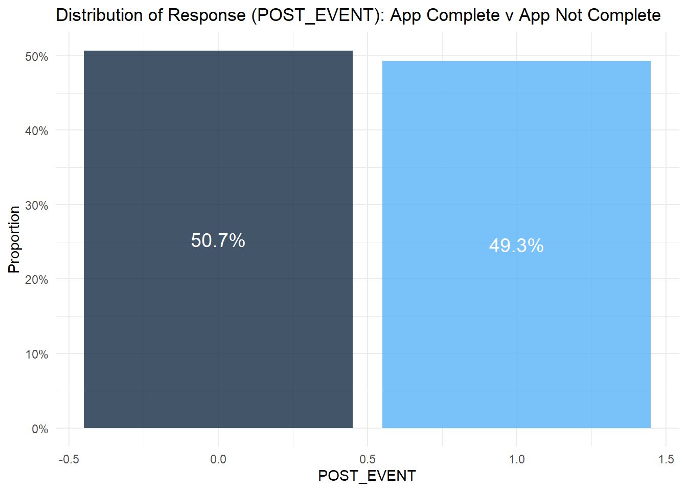
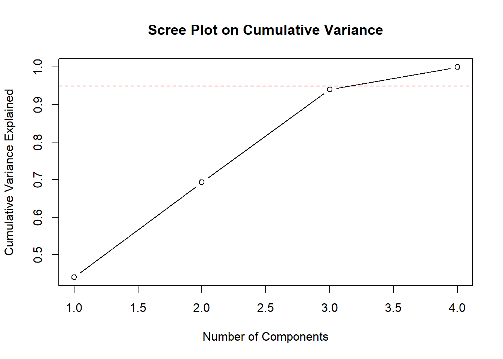

pacman::p_load(readr, here, dplyr, lubridate, corrplot, caret, ggplot2, car, e1071, vcd)DA6813 - Machine Learning Project
Project Proposal: Understanding Consumer Behavior for Bridgerton Estate Financial Using Online Interaction Data
Background Bridgerton Estate Financial is a one-of-a-kind banking institution that offers a range of financial products, including personal loans, credit cards, mortgages, and savings accounts. As a forward-thinking company, Bridgerton Estate Financial has invested heavily in its digital channels to engage with customers online, through mobile applications, and via web portals. Customers can explore products, ask questions, and complete applications directly through these platforms. To optimize the customer journey, Bridgerton Estate Financial tracks key digital events from their customers’ online behaviors. These events include interactions like product page visits, application starts, and completions or abandonments of forms. Our goal is to analyze this event tracking data to better understand consumer behavior and determine which factors drive customers to complete an application for a financial product or abandon the process.
Motivation As a data-driven organization, Bridgerton Estate Financial wants to enhance its understanding of consumer behavior on digital platforms to: • Improve Conversion Rates: Identify the key factors that lead to successful application completions and reduce application drop-offs. • Enhance the Customer Experience: Pinpoint areas of friction in the application process and improve the user interface to streamline the experience. • Optimize Marketing and Customer Engagement: Gain insights into when and how to engage customers more effectively, such as understanding peak interaction times or preferred devices. By leveraging data from customer interactions, the goal is to answer critical questions about the online behavior of Bridgerton Estate Financial’s customers, which would enable the company to make more informed decisions and improve customer conversion rates.
data_location <- here::here("data-exercise","Synthetic_Event_Data.csv")
rawdata <- read_csv(data_location, show_col_types = FALSE)str(rawdata)spc_tbl_ [1,000 × 17] (S3: spec_tbl_df/tbl_df/tbl/data.frame)
$ EVENT_DT : chr [1:1000] "10/17/2024" "10/17/2024" "10/17/2024" "10/17/2024" ...
$ EVENT_EFFECTIVE_GMT_TS : 'hms' num [1:1000] 11:48:00 13:39:00 13:13:00 06:56:00 ...
..- attr(*, "units")= chr "secs"
$ SOURCE_CHANNEL_CD : chr [1:1000] "www" "www" "www" "mob" ...
$ SOURCE_EVENT_ID : chr [1:1000] "bk-auto-loan-app-0" "bk-lending-cloe-fe-closing-1" "bk-card-cco-apply-2" "bk-auto-loan-app-3" ...
$ SOURCE_EVENT_DESC_TXT : chr [1:1000] "cco_approve_edit_card" "auto_loan_app_approved" "auto_loan_app_approved" "auto_loan_app_approved" ...
$ CORE_EVENT_TYPE_NM : chr [1:1000] "CSL" "ASL" "CSL" "CRC" ...
$ CORE_EVENT_SUBTYPE_NM : chr [1:1000] "DEC" "DEC" "DEC" "ACQ" ...
$ CORE_EVENT_NM_NOUN_NM : num [1:1000] 655 690 760 771 776 603 600 786 661 719 ...
$ ORIGINATING_CONTACT_POINT : chr [1:1000] "contact_point_6" "contact_point_5" "contact_point_4" "contact_point_3" ...
$ DESTINATION_CONTACT_POINT : chr [1:1000] "contact_point_3" "contact_point_4" "contact_point_9" "contact_point_6" ...
$ OTHER_ATTRIBUTES : chr [1:1000] "attribute_10" "attribute_10" "attribute_10" "attribute_4" ...
$ RELATED_PRODUCT : chr [1:1000] "product_4" "product_8" "product_10" "product_6" ...
$ COMMUNICATION_EVENT_ATTRIBUTES: chr [1:1000] "comm_event_9" "comm_event_2" "comm_event_4" "comm_event_4" ...
$ CORE_EVENT_SUBTYPE_2_NM : chr [1:1000] "CLM" "CLM" "PRC" "CLM" ...
$ CORE_EVENT_SUBTYPE_3_NM : chr [1:1000] "APPLY FOR LOAN" "APPLY FOR LOAN" "APPLY FOR CONSUMER LOAN" "OPEN CREDIT CARD ACCOUNT" ...
$ POST_EVENT : chr [1:1000] "App Not Complete" "App Not Complete" "App Not Complete" "App Not Complete" ...
$ CUSTOM_ATTRIBUTE : chr [1:1000] "custom_attr_6" "custom_attr_3" "custom_attr_4" "custom_attr_8" ...
- attr(*, "spec")=
.. cols(
.. EVENT_DT = col_character(),
.. EVENT_EFFECTIVE_GMT_TS = col_time(format = ""),
.. SOURCE_CHANNEL_CD = col_character(),
.. SOURCE_EVENT_ID = col_character(),
.. SOURCE_EVENT_DESC_TXT = col_character(),
.. CORE_EVENT_TYPE_NM = col_character(),
.. CORE_EVENT_SUBTYPE_NM = col_character(),
.. CORE_EVENT_NM_NOUN_NM = col_double(),
.. ORIGINATING_CONTACT_POINT = col_character(),
.. DESTINATION_CONTACT_POINT = col_character(),
.. OTHER_ATTRIBUTES = col_character(),
.. RELATED_PRODUCT = col_character(),
.. COMMUNICATION_EVENT_ATTRIBUTES = col_character(),
.. CORE_EVENT_SUBTYPE_2_NM = col_character(),
.. CORE_EVENT_SUBTYPE_3_NM = col_character(),
.. POST_EVENT = col_character(),
.. CUSTOM_ATTRIBUTE = col_character()
.. )
- attr(*, "problems")=<externalptr> I will need to convert EVENT_DT to a date type and POST_EVENT to a factor as this is my target variable. I also think there will be some use in know specific day of the week and hour for consumer’s digital activity so I’m going to break this out into their own variables. To do the ‘HOUR’ parsing I will need the package ‘Lubridate’
rawdata <- rawdata %>%
mutate(
# Converting EVENT_DT to a Date format
EVENT_DT = as.Date(EVENT_DT, format = "%m/%d/%Y"), #redundant because it's only 1 day of data
# Properly encoding POST_EVENT as a binary numeric variable (0 for "App Not Complete", 1 for "App Complete")
POST_EVENT = ifelse(POST_EVENT == "App Complete", 1, 0),
# Extracting the day of the week from EVENT_DT --for possible future use if I get more observations
#DAY_OF_WEEK = weekdays(EVENT_DT),
# Extracting the hour of interaction from EVENT_EFFECTIVE_GMT_TS
HOUR = hour(EVENT_EFFECTIVE_GMT_TS),
# Creating an interaction term between HOUR and SOURCE_CHANNEL_CD
HOUR_CHANNEL_INTERACTION = HOUR * as.numeric(as.factor(SOURCE_CHANNEL_CD))
) %>%
mutate_if(is.character, as.factor) # Converting all character variables to factorsNow to inspect data for missing values
colSums(is.na(rawdata)) EVENT_DT EVENT_EFFECTIVE_GMT_TS
0 0
SOURCE_CHANNEL_CD SOURCE_EVENT_ID
0 0
SOURCE_EVENT_DESC_TXT CORE_EVENT_TYPE_NM
0 0
CORE_EVENT_SUBTYPE_NM CORE_EVENT_NM_NOUN_NM
0 0
ORIGINATING_CONTACT_POINT DESTINATION_CONTACT_POINT
0 0
OTHER_ATTRIBUTES RELATED_PRODUCT
0 0
COMMUNICATION_EVENT_ATTRIBUTES CORE_EVENT_SUBTYPE_2_NM
0 0
CORE_EVENT_SUBTYPE_3_NM POST_EVENT
0 0
CUSTOM_ATTRIBUTE HOUR
0 0
HOUR_CHANNEL_INTERACTION
0 Checking to see how balanced my response variable is
post_event_balance <- rawdata %>%
count(POST_EVENT) %>%
mutate(Proportion = n / sum(n))
ggplot(post_event_balance, aes(x = POST_EVENT, y = Proportion, fill = POST_EVENT)) +
geom_bar(stat = "identity", alpha = 0.8) +
geom_text(aes(label = paste0(round(Proportion * 100, 1), "%")),
position = position_stack(vjust = 0.5),
color = "white",
size = 5) +
labs(title = "Distribution of Response (POST_EVENT): App Complete v App Not Complete",
x = "POST_EVENT",
y = "Proportion") +
scale_y_continuous(labels = scales::percent_format()) +
theme_minimal() +
theme(legend.position = "none")
#FEATURE ENGINEERING #Principal Component Analysis (PCA) SECTION for reducing and simplifying
single_level_cols <- names(Filter(function(x) length(unique(x)) == 1, rawdata))
single_level_cols[1] "EVENT_DT"remove variable with only one level, EVENT_DT only had one day anyway
# Removing Event_DT
rawdata <- rawdata[, !(names(rawdata) %in% single_level_cols)]# Subsetting the numeric variables in prep for PCA
numeric_data <- rawdata %>% select_if(is.numeric)
scaled_numeric_data <- scale(numeric_data)# Running PCA
pca_result <- prcomp(scaled_numeric_data, scale. = TRUE)
summary(pca_result)Importance of components:
PC1 PC2 PC3 PC4
Standard deviation 1.3263 1.0065 0.9947 0.48817
Proportion of Variance 0.4398 0.2533 0.2474 0.05958
Cumulative Proportion 0.4398 0.6931 0.9404 1.00000Interpretation: PC1 has the highest standard deviation, meaning it captures the most variance, it explains 43.98% of the variance alone so combining it with PC2 and PCA3 explainS 94.04% of the variance. Running the Scree plot below confirms this, I only need to retain 3.
cumulative_variance <- cumsum(pca_result$sdev^2 / sum(pca_result$sdev^2))
plot(cumulative_variance, type = "b", xlab = "Number of Components",
ylab = "Cumulative Variance Explained",
main = "Scree Plot on Cumulative Variance")
abline(h = 0.95, col = "red", lty = 2) # shows the 95% threshold
I would like to retain these 3 components moving forward because one of the benefits of doing this would be that the PCA components are uncorrelated (orthogonal), which should resolve any multicollinearity issues. Unfortunately, the downside would be that by transforming these original variables they would no longer be interpretable. While a logistic/SVM model might benefit from this, I don’t think I’ll need such a transformation anyway when using random forest down the line.
#Checking collinearity in numerical variables
Running VIF
vif_model <- lm(POST_EVENT ~ ., data = numeric_data)
vif_values <- vif(vif_model)
print(vif_values) CORE_EVENT_NM_NOUN_NM HOUR HOUR_CHANNEL_INTERACTION
1.002510 2.359174 2.360680 The VIF results indicate that all the variables have very low VIF values, with none exceeding the commonly accepted thresholds for multicollinearity (e.g., 5 for moderate multicollinearity or 10 for high multicollinearity). This means that multicollinearity for the numeric values is not a concern in my dataset and can idealy remain in the model.
#Checking collinearity in Categorical variables
categorical_columns <- rawdata %>% select_if(is.factor)
# Running pairwise Chi-Square + Cramer's V to cross-check all highly associated variable pairings
pairwise_cramers_v <- combn(names(categorical_columns), 2, function(cols) {
var1 <- categorical_columns[[cols[1]]]
var2 <- categorical_columns[[cols[2]]]
cramer_val <- assocstats(table(var1, var2))$cramer
data.frame(Var1 = cols[1], Var2 = cols[2], CramersV = cramer_val)
}, simplify = FALSE) %>% bind_rows()
high_association <- pairwise_cramers_v %>% filter(CramersV > 0.7) # Threshold for strong association
print(high_association) Var1 Var2 CramersV
1 SOURCE_CHANNEL_CD SOURCE_EVENT_ID 1
2 SOURCE_EVENT_ID SOURCE_EVENT_DESC_TXT 1
3 SOURCE_EVENT_ID CORE_EVENT_TYPE_NM 1
4 SOURCE_EVENT_ID CORE_EVENT_SUBTYPE_NM 1
5 SOURCE_EVENT_ID ORIGINATING_CONTACT_POINT 1
6 SOURCE_EVENT_ID DESTINATION_CONTACT_POINT 1
7 SOURCE_EVENT_ID OTHER_ATTRIBUTES 1
8 SOURCE_EVENT_ID RELATED_PRODUCT 1
9 SOURCE_EVENT_ID COMMUNICATION_EVENT_ATTRIBUTES 1
10 SOURCE_EVENT_ID CORE_EVENT_SUBTYPE_2_NM 1
11 SOURCE_EVENT_ID CORE_EVENT_SUBTYPE_3_NM 1
12 SOURCE_EVENT_ID CUSTOM_ATTRIBUTE 1Interpretation of results: The results of the Cramer’s V test indicate a perfect associations (Cramer’s V = 1) between SOURCE_EVENT_ID and over half of the other categorical variables. This means that SOURCE_EVENT_ID is highly predictive of these variables or vice versa, suggesting redundancy. I’m going to remove this variable from my dataset moving forward. Dropping EVENT_EFFECTIVE_GMT_TS variable as we have already created an ‘Hour’ variable out of it and don’t want to use both.
rawdata <- rawdata %>% select(-SOURCE_EVENT_ID) # Dropping SOURCE_EVENT_ID from datasetDouble checking my data set to see if everything is ready for modeling
str(rawdata)tibble [1,000 × 17] (S3: tbl_df/tbl/data.frame)
$ EVENT_EFFECTIVE_GMT_TS : 'hms' num [1:1000] 11:48:00 13:39:00 13:13:00 06:56:00 ...
..- attr(*, "units")= chr "secs"
$ SOURCE_CHANNEL_CD : Factor w/ 4 levels "and","iph","mob",..: 4 4 4 3 2 2 1 1 2 4 ...
$ SOURCE_EVENT_DESC_TXT : Factor w/ 3 levels "auto_loan_app_approved",..: 2 1 1 1 3 3 2 1 3 3 ...
$ CORE_EVENT_TYPE_NM : Factor w/ 3 levels "ASL","CRC","CSL": 3 1 3 2 1 2 1 2 3 1 ...
$ CORE_EVENT_SUBTYPE_NM : Factor w/ 3 levels "ACQ","ACQPL",..: 3 3 3 1 2 2 1 3 1 1 ...
$ CORE_EVENT_NM_NOUN_NM : num [1:1000] 655 690 760 771 776 603 600 786 661 719 ...
$ ORIGINATING_CONTACT_POINT : Factor w/ 10 levels "contact_point_1",..: 7 6 5 4 4 8 8 3 9 8 ...
$ DESTINATION_CONTACT_POINT : Factor w/ 10 levels "contact_point_1",..: 4 5 10 7 1 3 4 2 8 7 ...
$ OTHER_ATTRIBUTES : Factor w/ 10 levels "attribute_1",..: 2 2 2 5 2 10 3 1 7 2 ...
$ RELATED_PRODUCT : Factor w/ 10 levels "product_1","product_10",..: 5 9 2 7 8 3 3 7 6 1 ...
$ COMMUNICATION_EVENT_ATTRIBUTES: Factor w/ 10 levels "comm_event_1",..: 10 3 5 5 4 1 4 6 10 5 ...
$ CORE_EVENT_SUBTYPE_2_NM : Factor w/ 3 levels "CLM","DEC","PRC": 1 1 3 1 1 2 3 1 3 2 ...
$ CORE_EVENT_SUBTYPE_3_NM : Factor w/ 3 levels "APPLY FOR CONSUMER LOAN",..: 2 2 1 3 3 2 1 3 2 3 ...
$ POST_EVENT : num [1:1000] 0 0 0 0 1 0 1 0 1 0 ...
$ CUSTOM_ATTRIBUTE : Factor w/ 10 levels "custom_attr_1",..: 7 4 5 9 7 2 1 5 5 5 ...
$ HOUR : int [1:1000] 11 13 13 6 0 21 12 10 19 14 ...
$ HOUR_CHANNEL_INTERACTION : num [1:1000] 44 52 52 18 0 42 12 10 38 56 ...#BEGIN MODELING SECTION**********************************************************
If I’m going to try models like SVM and Logistic Regression I may need to scale my data - (is this step needed?)
rawdata_scaled <- rawdata %>%
mutate(across(where(is.numeric) & !all_of("POST_EVENT"), scale))#SPLIT TRAIN/TEST
set.seed(321)
train_indices <- createDataPartition(rawdata_scaled$POST_EVENT, p = 0.8, list = FALSE)
train_data <- rawdata_scaled[train_indices, ]
test_data <- rawdata_scaled[-train_indices, ]#Logistic Regression (using PCA components dataset)
numeric_data <- rawdata %>% select_if(is.numeric)
scaled_numeric_data <- scale(numeric_data)
pca_result <- prcomp(scaled_numeric_data, scale. = TRUE)
pca_transformed <- as.data.frame(predict(pca_result, newdata = scaled_numeric_data)[, 1:3]) # Using only top 3 components
rawdata_pca <- cbind(POST_EVENT = rawdata$POST_EVENT, pca_transformed)logistic_model <- glm(POST_EVENT ~ ., data = rawdata_pca[train_indices, ], family = binomial)Warning: glm.fit: algorithm did not convergesummary(logistic_model)
Call:
glm(formula = POST_EVENT ~ ., family = binomial, data = rawdata_pca[train_indices,
])
Coefficients:
Estimate Std. Error z value Pr(>|z|)
(Intercept) -0.3743 12465.8147 0.000 1.000
PC1 0.6449 9243.8807 0.000 1.000
PC2 19.5005 12317.5677 0.002 0.999
PC3 18.3588 12766.6379 0.001 0.999
(Dispersion parameter for binomial family taken to be 1)
Null deviance: 1.109e+03 on 799 degrees of freedom
Residual deviance: 4.779e-09 on 796 degrees of freedom
AIC: 8
Number of Fisher Scoring iterations: 25Results Logistic Model 1: model shit the bed - Write something here about using PCA components not being a working method for this
#Logistic Regression (using rawdata set)
set.seed(321)
train_indices <- createDataPartition(rawdata$POST_EVENT, p = 0.8, list = FALSE)
train_data <- rawdata[train_indices, ]
test_data <- rawdata[-train_indices, ]
logistic_model2 <- glm(POST_EVENT ~ ., data = train_data, family = binomial)
summary(logistic_model2)
Call:
glm(formula = POST_EVENT ~ ., family = binomial, data = train_data)
Coefficients:
Estimate Std. Error
(Intercept) -5.473e-01 1.203e+00
EVENT_EFFECTIVE_GMT_TS -9.053e-05 7.501e-05
SOURCE_CHANNEL_CDiph 8.395e-02 2.436e-01
SOURCE_CHANNEL_CDmob 1.788e-01 3.220e-01
SOURCE_CHANNEL_CDwww 3.563e-01 4.166e-01
SOURCE_EVENT_DESC_TXTcco_approve_edit_card -2.519e-01 1.920e-01
SOURCE_EVENT_DESC_TXTpul_loan_app_post_bureau_decline -1.706e-01 1.909e-01
CORE_EVENT_TYPE_NMCRC 8.732e-02 1.913e-01
CORE_EVENT_TYPE_NMCSL 2.405e-01 1.951e-01
CORE_EVENT_SUBTYPE_NMACQPL 2.132e-02 1.853e-01
CORE_EVENT_SUBTYPE_NMDEC 1.075e-01 1.878e-01
CORE_EVENT_NM_NOUN_NM 1.283e-03 1.365e-03
ORIGINATING_CONTACT_POINTcontact_point_10 -5.536e-01 3.373e-01
ORIGINATING_CONTACT_POINTcontact_point_2 -3.244e-01 3.449e-01
ORIGINATING_CONTACT_POINTcontact_point_3 -2.714e-02 3.593e-01
ORIGINATING_CONTACT_POINTcontact_point_4 -4.972e-01 3.684e-01
ORIGINATING_CONTACT_POINTcontact_point_5 -1.950e-01 3.287e-01
ORIGINATING_CONTACT_POINTcontact_point_6 -4.380e-01 3.333e-01
ORIGINATING_CONTACT_POINTcontact_point_7 3.325e-02 3.458e-01
ORIGINATING_CONTACT_POINTcontact_point_8 -8.129e-01 3.503e-01
ORIGINATING_CONTACT_POINTcontact_point_9 -5.126e-01 3.565e-01
DESTINATION_CONTACT_POINTcontact_point_10 -1.431e-01 3.430e-01
DESTINATION_CONTACT_POINTcontact_point_2 8.348e-02 3.399e-01
DESTINATION_CONTACT_POINTcontact_point_3 1.153e-01 3.528e-01
DESTINATION_CONTACT_POINTcontact_point_4 -2.408e-02 3.574e-01
DESTINATION_CONTACT_POINTcontact_point_5 3.675e-02 3.535e-01
DESTINATION_CONTACT_POINTcontact_point_6 5.276e-01 3.597e-01
DESTINATION_CONTACT_POINTcontact_point_7 8.805e-02 3.567e-01
DESTINATION_CONTACT_POINTcontact_point_8 -9.194e-02 3.520e-01
DESTINATION_CONTACT_POINTcontact_point_9 -3.673e-01 3.432e-01
OTHER_ATTRIBUTESattribute_10 -6.796e-02 3.212e-01
OTHER_ATTRIBUTESattribute_2 2.586e-01 3.425e-01
OTHER_ATTRIBUTESattribute_3 1.835e-01 3.105e-01
OTHER_ATTRIBUTESattribute_4 8.968e-02 3.374e-01
OTHER_ATTRIBUTESattribute_5 -2.108e-01 3.435e-01
OTHER_ATTRIBUTESattribute_6 -2.760e-01 3.298e-01
OTHER_ATTRIBUTESattribute_7 6.711e-01 3.348e-01
OTHER_ATTRIBUTESattribute_8 1.511e-01 3.388e-01
OTHER_ATTRIBUTESattribute_9 3.594e-01 3.249e-01
RELATED_PRODUCTproduct_10 8.978e-01 3.496e-01
RELATED_PRODUCTproduct_2 5.074e-01 3.412e-01
RELATED_PRODUCTproduct_3 9.146e-02 3.552e-01
RELATED_PRODUCTproduct_4 3.756e-01 3.406e-01
RELATED_PRODUCTproduct_5 5.396e-01 3.578e-01
RELATED_PRODUCTproduct_6 1.073e+00 3.750e-01
RELATED_PRODUCTproduct_7 2.789e-01 3.593e-01
RELATED_PRODUCTproduct_8 -2.059e-01 3.619e-01
RELATED_PRODUCTproduct_9 3.406e-01 3.756e-01
COMMUNICATION_EVENT_ATTRIBUTEScomm_event_10 -8.177e-01 3.564e-01
COMMUNICATION_EVENT_ATTRIBUTEScomm_event_2 -3.083e-01 3.316e-01
COMMUNICATION_EVENT_ATTRIBUTEScomm_event_3 -2.630e-01 3.579e-01
COMMUNICATION_EVENT_ATTRIBUTEScomm_event_4 -7.216e-01 3.372e-01
COMMUNICATION_EVENT_ATTRIBUTEScomm_event_5 -6.123e-01 3.428e-01
COMMUNICATION_EVENT_ATTRIBUTEScomm_event_6 -8.269e-02 3.501e-01
COMMUNICATION_EVENT_ATTRIBUTEScomm_event_7 -8.027e-01 3.554e-01
COMMUNICATION_EVENT_ATTRIBUTEScomm_event_8 -2.135e-01 3.436e-01
COMMUNICATION_EVENT_ATTRIBUTEScomm_event_9 -5.039e-01 3.486e-01
CORE_EVENT_SUBTYPE_2_NMDEC -3.048e-01 1.960e-01
CORE_EVENT_SUBTYPE_2_NMPRC -6.515e-02 1.931e-01
CORE_EVENT_SUBTYPE_3_NMAPPLY FOR LOAN 7.126e-02 1.859e-01
CORE_EVENT_SUBTYPE_3_NMOPEN CREDIT CARD ACCOUNT 2.286e-01 1.971e-01
CUSTOM_ATTRIBUTEcustom_attr_10 -6.731e-02 3.771e-01
CUSTOM_ATTRIBUTEcustom_attr_2 -1.335e-01 3.632e-01
CUSTOM_ATTRIBUTEcustom_attr_3 -4.031e-01 3.454e-01
CUSTOM_ATTRIBUTEcustom_attr_4 -3.308e-01 3.395e-01
CUSTOM_ATTRIBUTEcustom_attr_5 -1.720e-01 3.733e-01
CUSTOM_ATTRIBUTEcustom_attr_6 -3.132e-01 3.497e-01
CUSTOM_ATTRIBUTEcustom_attr_7 -1.263e-01 3.662e-01
CUSTOM_ATTRIBUTEcustom_attr_8 -3.190e-01 3.516e-01
CUSTOM_ATTRIBUTEcustom_attr_9 -2.851e-02 3.643e-01
HOUR 3.821e-01 2.723e-01
HOUR_CHANNEL_INTERACTION -1.887e-02 1.010e-02
z value Pr(>|z|)
(Intercept) -0.455 0.64920
EVENT_EFFECTIVE_GMT_TS -1.207 0.22744
SOURCE_CHANNEL_CDiph 0.345 0.73035
SOURCE_CHANNEL_CDmob 0.555 0.57866
SOURCE_CHANNEL_CDwww 0.855 0.39243
SOURCE_EVENT_DESC_TXTcco_approve_edit_card -1.312 0.18943
SOURCE_EVENT_DESC_TXTpul_loan_app_post_bureau_decline -0.893 0.37169
CORE_EVENT_TYPE_NMCRC 0.457 0.64801
CORE_EVENT_TYPE_NMCSL 1.233 0.21763
CORE_EVENT_SUBTYPE_NMACQPL 0.115 0.90840
CORE_EVENT_SUBTYPE_NMDEC 0.572 0.56708
CORE_EVENT_NM_NOUN_NM 0.940 0.34698
ORIGINATING_CONTACT_POINTcontact_point_10 -1.641 0.10076
ORIGINATING_CONTACT_POINTcontact_point_2 -0.940 0.34699
ORIGINATING_CONTACT_POINTcontact_point_3 -0.076 0.93980
ORIGINATING_CONTACT_POINTcontact_point_4 -1.350 0.17712
ORIGINATING_CONTACT_POINTcontact_point_5 -0.593 0.55302
ORIGINATING_CONTACT_POINTcontact_point_6 -1.314 0.18885
ORIGINATING_CONTACT_POINTcontact_point_7 0.096 0.92339
ORIGINATING_CONTACT_POINTcontact_point_8 -2.321 0.02029 *
ORIGINATING_CONTACT_POINTcontact_point_9 -1.438 0.15049
DESTINATION_CONTACT_POINTcontact_point_10 -0.417 0.67655
DESTINATION_CONTACT_POINTcontact_point_2 0.246 0.80598
DESTINATION_CONTACT_POINTcontact_point_3 0.327 0.74376
DESTINATION_CONTACT_POINTcontact_point_4 -0.067 0.94627
DESTINATION_CONTACT_POINTcontact_point_5 0.104 0.91722
DESTINATION_CONTACT_POINTcontact_point_6 1.467 0.14241
DESTINATION_CONTACT_POINTcontact_point_7 0.247 0.80501
DESTINATION_CONTACT_POINTcontact_point_8 -0.261 0.79396
DESTINATION_CONTACT_POINTcontact_point_9 -1.070 0.28457
OTHER_ATTRIBUTESattribute_10 -0.212 0.83241
OTHER_ATTRIBUTESattribute_2 0.755 0.45024
OTHER_ATTRIBUTESattribute_3 0.591 0.55459
OTHER_ATTRIBUTESattribute_4 0.266 0.79037
OTHER_ATTRIBUTESattribute_5 -0.614 0.53954
OTHER_ATTRIBUTESattribute_6 -0.837 0.40262
OTHER_ATTRIBUTESattribute_7 2.005 0.04499 *
OTHER_ATTRIBUTESattribute_8 0.446 0.65549
OTHER_ATTRIBUTESattribute_9 1.106 0.26862
RELATED_PRODUCTproduct_10 2.568 0.01023 *
RELATED_PRODUCTproduct_2 1.487 0.13693
RELATED_PRODUCTproduct_3 0.257 0.79681
RELATED_PRODUCTproduct_4 1.103 0.27019
RELATED_PRODUCTproduct_5 1.508 0.13149
RELATED_PRODUCTproduct_6 2.862 0.00421 **
RELATED_PRODUCTproduct_7 0.776 0.43769
RELATED_PRODUCTproduct_8 -0.569 0.56948
RELATED_PRODUCTproduct_9 0.907 0.36454
COMMUNICATION_EVENT_ATTRIBUTEScomm_event_10 -2.295 0.02176 *
COMMUNICATION_EVENT_ATTRIBUTEScomm_event_2 -0.930 0.35251
COMMUNICATION_EVENT_ATTRIBUTEScomm_event_3 -0.735 0.46238
COMMUNICATION_EVENT_ATTRIBUTEScomm_event_4 -2.140 0.03237 *
COMMUNICATION_EVENT_ATTRIBUTEScomm_event_5 -1.786 0.07409 .
COMMUNICATION_EVENT_ATTRIBUTEScomm_event_6 -0.236 0.81330
COMMUNICATION_EVENT_ATTRIBUTEScomm_event_7 -2.259 0.02390 *
COMMUNICATION_EVENT_ATTRIBUTEScomm_event_8 -0.621 0.53433
COMMUNICATION_EVENT_ATTRIBUTEScomm_event_9 -1.445 0.14833
CORE_EVENT_SUBTYPE_2_NMDEC -1.555 0.11992
CORE_EVENT_SUBTYPE_2_NMPRC -0.337 0.73579
CORE_EVENT_SUBTYPE_3_NMAPPLY FOR LOAN 0.383 0.70155
CORE_EVENT_SUBTYPE_3_NMOPEN CREDIT CARD ACCOUNT 1.160 0.24624
CUSTOM_ATTRIBUTEcustom_attr_10 -0.178 0.85834
CUSTOM_ATTRIBUTEcustom_attr_2 -0.368 0.71324
CUSTOM_ATTRIBUTEcustom_attr_3 -1.167 0.24317
CUSTOM_ATTRIBUTEcustom_attr_4 -0.974 0.32990
CUSTOM_ATTRIBUTEcustom_attr_5 -0.461 0.64501
CUSTOM_ATTRIBUTEcustom_attr_6 -0.896 0.37049
CUSTOM_ATTRIBUTEcustom_attr_7 -0.345 0.73021
CUSTOM_ATTRIBUTEcustom_attr_8 -0.907 0.36423
CUSTOM_ATTRIBUTEcustom_attr_9 -0.078 0.93762
HOUR 1.403 0.16056
HOUR_CHANNEL_INTERACTION -1.868 0.06178 .
---
Signif. codes: 0 '***' 0.001 '**' 0.01 '*' 0.05 '.' 0.1 ' ' 1
(Dispersion parameter for binomial family taken to be 1)
Null deviance: 1109.0 on 799 degrees of freedom
Residual deviance: 1027.6 on 728 degrees of freedom
AIC: 1171.6
Number of Fisher Scoring iterations: 4Results Logistic Model 2: There appears to be a lot of variables with no significance, let’s apply some stepwise/backward elimination to our model
logistic_model3 <- step(logistic_model2, direction = "backward")Start: AIC=1171.64
POST_EVENT ~ EVENT_EFFECTIVE_GMT_TS + SOURCE_CHANNEL_CD + SOURCE_EVENT_DESC_TXT +
CORE_EVENT_TYPE_NM + CORE_EVENT_SUBTYPE_NM + CORE_EVENT_NM_NOUN_NM +
ORIGINATING_CONTACT_POINT + DESTINATION_CONTACT_POINT + OTHER_ATTRIBUTES +
RELATED_PRODUCT + COMMUNICATION_EVENT_ATTRIBUTES + CORE_EVENT_SUBTYPE_2_NM +
CORE_EVENT_SUBTYPE_3_NM + CUSTOM_ATTRIBUTE + HOUR + HOUR_CHANNEL_INTERACTION
Df Deviance AIC
- CUSTOM_ATTRIBUTE 9 1030.8 1156.8
- DESTINATION_CONTACT_POINT 9 1035.5 1161.5
- OTHER_ATTRIBUTES 9 1038.7 1164.7
- ORIGINATING_CONTACT_POINT 9 1039.4 1165.4
- SOURCE_CHANNEL_CD 3 1028.4 1166.4
- COMMUNICATION_EVENT_ATTRIBUTES 9 1040.5 1166.5
- CORE_EVENT_SUBTYPE_NM 2 1028.0 1168.0
- CORE_EVENT_SUBTYPE_3_NM 2 1029.0 1169.0
- CORE_EVENT_TYPE_NM 2 1029.2 1169.2
- SOURCE_EVENT_DESC_TXT 2 1029.4 1169.4
- CORE_EVENT_SUBTYPE_2_NM 2 1030.4 1170.4
- CORE_EVENT_NM_NOUN_NM 1 1028.5 1170.5
- EVENT_EFFECTIVE_GMT_TS 1 1029.1 1171.1
- HOUR 1 1029.6 1171.6
<none> 1027.6 1171.6
- HOUR_CHANNEL_INTERACTION 1 1031.2 1173.2
- RELATED_PRODUCT 9 1049.5 1175.5
Step: AIC=1156.76
POST_EVENT ~ EVENT_EFFECTIVE_GMT_TS + SOURCE_CHANNEL_CD + SOURCE_EVENT_DESC_TXT +
CORE_EVENT_TYPE_NM + CORE_EVENT_SUBTYPE_NM + CORE_EVENT_NM_NOUN_NM +
ORIGINATING_CONTACT_POINT + DESTINATION_CONTACT_POINT + OTHER_ATTRIBUTES +
RELATED_PRODUCT + COMMUNICATION_EVENT_ATTRIBUTES + CORE_EVENT_SUBTYPE_2_NM +
CORE_EVENT_SUBTYPE_3_NM + HOUR + HOUR_CHANNEL_INTERACTION
Df Deviance AIC
- DESTINATION_CONTACT_POINT 9 1038.7 1146.7
- OTHER_ATTRIBUTES 9 1042.2 1150.2
- ORIGINATING_CONTACT_POINT 9 1042.9 1150.9
- SOURCE_CHANNEL_CD 3 1031.6 1151.6
- COMMUNICATION_EVENT_ATTRIBUTES 9 1044.0 1152.0
- CORE_EVENT_SUBTYPE_NM 2 1031.2 1153.2
- CORE_EVENT_SUBTYPE_3_NM 2 1032.1 1154.1
- SOURCE_EVENT_DESC_TXT 2 1032.4 1154.4
- CORE_EVENT_TYPE_NM 2 1032.6 1154.6
- CORE_EVENT_SUBTYPE_2_NM 2 1033.4 1155.4
- CORE_EVENT_NM_NOUN_NM 1 1031.8 1155.8
- EVENT_EFFECTIVE_GMT_TS 1 1032.0 1156.0
- HOUR 1 1032.5 1156.5
<none> 1030.8 1156.8
- HOUR_CHANNEL_INTERACTION 1 1034.4 1158.4
- RELATED_PRODUCT 9 1052.6 1160.6
Step: AIC=1146.7
POST_EVENT ~ EVENT_EFFECTIVE_GMT_TS + SOURCE_CHANNEL_CD + SOURCE_EVENT_DESC_TXT +
CORE_EVENT_TYPE_NM + CORE_EVENT_SUBTYPE_NM + CORE_EVENT_NM_NOUN_NM +
ORIGINATING_CONTACT_POINT + OTHER_ATTRIBUTES + RELATED_PRODUCT +
COMMUNICATION_EVENT_ATTRIBUTES + CORE_EVENT_SUBTYPE_2_NM +
CORE_EVENT_SUBTYPE_3_NM + HOUR + HOUR_CHANNEL_INTERACTION
Df Deviance AIC
- OTHER_ATTRIBUTES 9 1049.8 1139.8
- ORIGINATING_CONTACT_POINT 9 1050.8 1140.8
- COMMUNICATION_EVENT_ATTRIBUTES 9 1051.4 1141.4
- SOURCE_CHANNEL_CD 3 1040.0 1142.0
- CORE_EVENT_SUBTYPE_NM 2 1039.0 1143.0
- SOURCE_EVENT_DESC_TXT 2 1040.2 1144.2
- CORE_EVENT_SUBTYPE_3_NM 2 1040.4 1144.4
- CORE_EVENT_TYPE_NM 2 1040.5 1144.5
- CORE_EVENT_NM_NOUN_NM 1 1039.6 1145.6
- EVENT_EFFECTIVE_GMT_TS 1 1039.9 1145.9
- CORE_EVENT_SUBTYPE_2_NM 2 1042.2 1146.2
- HOUR 1 1040.4 1146.4
<none> 1038.7 1146.7
- HOUR_CHANNEL_INTERACTION 1 1043.2 1149.2
- RELATED_PRODUCT 9 1059.5 1149.5
Step: AIC=1139.76
POST_EVENT ~ EVENT_EFFECTIVE_GMT_TS + SOURCE_CHANNEL_CD + SOURCE_EVENT_DESC_TXT +
CORE_EVENT_TYPE_NM + CORE_EVENT_SUBTYPE_NM + CORE_EVENT_NM_NOUN_NM +
ORIGINATING_CONTACT_POINT + RELATED_PRODUCT + COMMUNICATION_EVENT_ATTRIBUTES +
CORE_EVENT_SUBTYPE_2_NM + CORE_EVENT_SUBTYPE_3_NM + HOUR +
HOUR_CHANNEL_INTERACTION
Df Deviance AIC
- ORIGINATING_CONTACT_POINT 9 1062.0 1134.0
- SOURCE_CHANNEL_CD 3 1050.6 1134.6
- COMMUNICATION_EVENT_ATTRIBUTES 9 1063.4 1135.4
- CORE_EVENT_SUBTYPE_NM 2 1050.3 1136.3
- SOURCE_EVENT_DESC_TXT 2 1051.1 1137.1
- CORE_EVENT_TYPE_NM 2 1051.2 1137.2
- CORE_EVENT_SUBTYPE_3_NM 2 1051.5 1137.5
- CORE_EVENT_SUBTYPE_2_NM 2 1052.2 1138.2
- CORE_EVENT_NM_NOUN_NM 1 1050.8 1138.8
- EVENT_EFFECTIVE_GMT_TS 1 1051.0 1139.0
- HOUR 1 1051.5 1139.5
<none> 1049.8 1139.8
- RELATED_PRODUCT 9 1069.0 1141.0
- HOUR_CHANNEL_INTERACTION 1 1053.2 1141.2
Step: AIC=1134.01
POST_EVENT ~ EVENT_EFFECTIVE_GMT_TS + SOURCE_CHANNEL_CD + SOURCE_EVENT_DESC_TXT +
CORE_EVENT_TYPE_NM + CORE_EVENT_SUBTYPE_NM + CORE_EVENT_NM_NOUN_NM +
RELATED_PRODUCT + COMMUNICATION_EVENT_ATTRIBUTES + CORE_EVENT_SUBTYPE_2_NM +
CORE_EVENT_SUBTYPE_3_NM + HOUR + HOUR_CHANNEL_INTERACTION
Df Deviance AIC
- SOURCE_CHANNEL_CD 3 1062.8 1128.8
- COMMUNICATION_EVENT_ATTRIBUTES 9 1076.1 1130.1
- CORE_EVENT_SUBTYPE_NM 2 1062.7 1130.7
- SOURCE_EVENT_DESC_TXT 2 1062.8 1130.8
- CORE_EVENT_TYPE_NM 2 1063.6 1131.6
- CORE_EVENT_SUBTYPE_2_NM 2 1064.0 1132.0
- CORE_EVENT_SUBTYPE_3_NM 2 1064.2 1132.2
- EVENT_EFFECTIVE_GMT_TS 1 1063.2 1133.2
- CORE_EVENT_NM_NOUN_NM 1 1063.4 1133.4
- HOUR 1 1063.6 1133.6
<none> 1062.0 1134.0
- HOUR_CHANNEL_INTERACTION 1 1065.5 1135.5
- RELATED_PRODUCT 9 1081.8 1135.8
Step: AIC=1128.79
POST_EVENT ~ EVENT_EFFECTIVE_GMT_TS + SOURCE_EVENT_DESC_TXT +
CORE_EVENT_TYPE_NM + CORE_EVENT_SUBTYPE_NM + CORE_EVENT_NM_NOUN_NM +
RELATED_PRODUCT + COMMUNICATION_EVENT_ATTRIBUTES + CORE_EVENT_SUBTYPE_2_NM +
CORE_EVENT_SUBTYPE_3_NM + HOUR + HOUR_CHANNEL_INTERACTION
Df Deviance AIC
- COMMUNICATION_EVENT_ATTRIBUTES 9 1077.2 1125.2
- CORE_EVENT_SUBTYPE_NM 2 1063.5 1125.5
- SOURCE_EVENT_DESC_TXT 2 1063.6 1125.6
- CORE_EVENT_TYPE_NM 2 1064.5 1126.5
- CORE_EVENT_SUBTYPE_2_NM 2 1064.8 1126.8
- CORE_EVENT_SUBTYPE_3_NM 2 1065.0 1127.0
- EVENT_EFFECTIVE_GMT_TS 1 1063.8 1127.8
- CORE_EVENT_NM_NOUN_NM 1 1064.1 1128.1
- HOUR 1 1064.2 1128.2
<none> 1062.8 1128.8
- RELATED_PRODUCT 9 1082.4 1130.4
- HOUR_CHANNEL_INTERACTION 1 1068.4 1132.4
Step: AIC=1125.25
POST_EVENT ~ EVENT_EFFECTIVE_GMT_TS + SOURCE_EVENT_DESC_TXT +
CORE_EVENT_TYPE_NM + CORE_EVENT_SUBTYPE_NM + CORE_EVENT_NM_NOUN_NM +
RELATED_PRODUCT + CORE_EVENT_SUBTYPE_2_NM + CORE_EVENT_SUBTYPE_3_NM +
HOUR + HOUR_CHANNEL_INTERACTION
Df Deviance AIC
- CORE_EVENT_SUBTYPE_NM 2 1077.7 1121.7
- SOURCE_EVENT_DESC_TXT 2 1078.2 1122.2
- CORE_EVENT_TYPE_NM 2 1078.6 1122.6
- CORE_EVENT_SUBTYPE_3_NM 2 1079.2 1123.2
- CORE_EVENT_SUBTYPE_2_NM 2 1080.3 1124.3
- CORE_EVENT_NM_NOUN_NM 1 1078.3 1124.3
- EVENT_EFFECTIVE_GMT_TS 1 1078.6 1124.6
- HOUR 1 1079.0 1125.0
<none> 1077.2 1125.2
- RELATED_PRODUCT 9 1095.7 1125.7
- HOUR_CHANNEL_INTERACTION 1 1082.5 1128.5
Step: AIC=1121.72
POST_EVENT ~ EVENT_EFFECTIVE_GMT_TS + SOURCE_EVENT_DESC_TXT +
CORE_EVENT_TYPE_NM + CORE_EVENT_NM_NOUN_NM + RELATED_PRODUCT +
CORE_EVENT_SUBTYPE_2_NM + CORE_EVENT_SUBTYPE_3_NM + HOUR +
HOUR_CHANNEL_INTERACTION
Df Deviance AIC
- SOURCE_EVENT_DESC_TXT 2 1078.7 1118.7
- CORE_EVENT_TYPE_NM 2 1079.1 1119.1
- CORE_EVENT_SUBTYPE_3_NM 2 1079.7 1119.7
- CORE_EVENT_SUBTYPE_2_NM 2 1080.7 1120.7
- CORE_EVENT_NM_NOUN_NM 1 1078.8 1120.8
- EVENT_EFFECTIVE_GMT_TS 1 1079.1 1121.1
- HOUR 1 1079.5 1121.5
<none> 1077.7 1121.7
- RELATED_PRODUCT 9 1096.0 1122.0
- HOUR_CHANNEL_INTERACTION 1 1083.1 1125.1
Step: AIC=1118.73
POST_EVENT ~ EVENT_EFFECTIVE_GMT_TS + CORE_EVENT_TYPE_NM + CORE_EVENT_NM_NOUN_NM +
RELATED_PRODUCT + CORE_EVENT_SUBTYPE_2_NM + CORE_EVENT_SUBTYPE_3_NM +
HOUR + HOUR_CHANNEL_INTERACTION
Df Deviance AIC
- CORE_EVENT_TYPE_NM 2 1080.1 1116.1
- CORE_EVENT_SUBTYPE_3_NM 2 1080.9 1116.9
- CORE_EVENT_SUBTYPE_2_NM 2 1081.5 1117.5
- CORE_EVENT_NM_NOUN_NM 1 1079.8 1117.8
- EVENT_EFFECTIVE_GMT_TS 1 1080.1 1118.1
- HOUR 1 1080.5 1118.5
<none> 1078.7 1118.7
- RELATED_PRODUCT 9 1096.8 1118.8
- HOUR_CHANNEL_INTERACTION 1 1084.4 1122.4
Step: AIC=1116.12
POST_EVENT ~ EVENT_EFFECTIVE_GMT_TS + CORE_EVENT_NM_NOUN_NM +
RELATED_PRODUCT + CORE_EVENT_SUBTYPE_2_NM + CORE_EVENT_SUBTYPE_3_NM +
HOUR + HOUR_CHANNEL_INTERACTION
Df Deviance AIC
- CORE_EVENT_SUBTYPE_3_NM 2 1082.3 1114.3
- CORE_EVENT_SUBTYPE_2_NM 2 1082.9 1114.9
- CORE_EVENT_NM_NOUN_NM 1 1081.3 1115.3
- EVENT_EFFECTIVE_GMT_TS 1 1081.4 1115.4
- HOUR 1 1081.7 1115.7
<none> 1080.1 1116.1
- RELATED_PRODUCT 9 1098.2 1116.2
- HOUR_CHANNEL_INTERACTION 1 1085.5 1119.5
Step: AIC=1114.28
POST_EVENT ~ EVENT_EFFECTIVE_GMT_TS + CORE_EVENT_NM_NOUN_NM +
RELATED_PRODUCT + CORE_EVENT_SUBTYPE_2_NM + HOUR + HOUR_CHANNEL_INTERACTION
Df Deviance AIC
- CORE_EVENT_SUBTYPE_2_NM 2 1084.7 1112.7
- EVENT_EFFECTIVE_GMT_TS 1 1083.3 1113.3
- CORE_EVENT_NM_NOUN_NM 1 1083.4 1113.4
- HOUR 1 1083.6 1113.6
- RELATED_PRODUCT 9 1100.0 1114.0
<none> 1082.3 1114.3
- HOUR_CHANNEL_INTERACTION 1 1087.1 1117.1
Step: AIC=1112.7
POST_EVENT ~ EVENT_EFFECTIVE_GMT_TS + CORE_EVENT_NM_NOUN_NM +
RELATED_PRODUCT + HOUR + HOUR_CHANNEL_INTERACTION
Df Deviance AIC
- EVENT_EFFECTIVE_GMT_TS 1 1085.7 1111.7
- RELATED_PRODUCT 9 1101.9 1111.9
- HOUR 1 1086.0 1112.0
- CORE_EVENT_NM_NOUN_NM 1 1086.0 1112.0
<none> 1084.7 1112.7
- HOUR_CHANNEL_INTERACTION 1 1089.1 1115.1
Step: AIC=1111.74
POST_EVENT ~ CORE_EVENT_NM_NOUN_NM + RELATED_PRODUCT + HOUR +
HOUR_CHANNEL_INTERACTION
Df Deviance AIC
- RELATED_PRODUCT 9 1103.1 1111.1
- CORE_EVENT_NM_NOUN_NM 1 1087.2 1111.2
<none> 1085.7 1111.7
- HOUR_CHANNEL_INTERACTION 1 1090.3 1114.3
- HOUR 1 1090.5 1114.5
Step: AIC=1111.06
POST_EVENT ~ CORE_EVENT_NM_NOUN_NM + HOUR + HOUR_CHANNEL_INTERACTION
Df Deviance AIC
- CORE_EVENT_NM_NOUN_NM 1 1104.5 1110.5
<none> 1103.1 1111.1
- HOUR_CHANNEL_INTERACTION 1 1107.2 1113.2
- HOUR 1 1107.2 1113.2
Step: AIC=1110.48
POST_EVENT ~ HOUR + HOUR_CHANNEL_INTERACTION
Df Deviance AIC
<none> 1104.5 1110.5
- HOUR_CHANNEL_INTERACTION 1 1108.4 1112.4
- HOUR 1 1108.5 1112.5summary(logistic_model3)
Call:
glm(formula = POST_EVENT ~ HOUR + HOUR_CHANNEL_INTERACTION, family = binomial,
data = train_data)
Coefficients:
Estimate Std. Error z value Pr(>|z|)
(Intercept) -0.119246 0.141714 -0.841 0.4001
HOUR 0.031739 0.015996 1.984 0.0472 *
HOUR_CHANNEL_INTERACTION -0.009245 0.004688 -1.972 0.0486 *
---
Signif. codes: 0 '***' 0.001 '**' 0.01 '*' 0.05 '.' 0.1 ' ' 1
(Dispersion parameter for binomial family taken to be 1)
Null deviance: 1109.0 on 799 degrees of freedom
Residual deviance: 1104.5 on 797 degrees of freedom
AIC: 1110.5
Number of Fisher Scoring iterations: 3Results Logistic Model 3:The backward elimination process significantly simplified the model leaving only two predictors: HOUR and HOUR_CHANNEL_INTERACTION
Model strength: Predictors are statistically significant, providing meaningful insights into how time-related factors influence application completion Both predictors are statistically significant (𝑝<0.05 p<0.05): HOUR:𝑝=0.0472 HOUR_CHANNEL_INTERACTION:𝑝=0.0486 Model Weakness: The model does not explain much variability for the target variable and only has two predictors and lacks any complexity for achieving any real accuracy
logistic_pred3 <- predict(logistic_model3, newdata = test_data, type = "response")
logistic_class3 <- ifelse(logistic_pred3 > 0.5, 1, 0)confusionMatrix(as.factor(logistic_class3), as.factor(test_data$POST_EVENT))Confusion Matrix and Statistics
Reference
Prediction 0 1
0 75 59
1 28 38
Accuracy : 0.565
95% CI : (0.4933, 0.6348)
No Information Rate : 0.515
P-Value [Acc > NIR] : 0.089291
Kappa : 0.121
Mcnemar's Test P-Value : 0.001298
Sensitivity : 0.7282
Specificity : 0.3918
Pos Pred Value : 0.5597
Neg Pred Value : 0.5758
Prevalence : 0.5150
Detection Rate : 0.3750
Detection Prevalence : 0.6700
Balanced Accuracy : 0.5600
'Positive' Class : 0
Running this model on the test data and seeing the results in the confusion matrix confirms the logistic regression model achieved an accuracy of 56.5%, which is only slightly better than chance. The model performed well in identifying non-application completers (Class 0), with a sensitivity of 72.8%, but struggled to detect application completers (Class 1), with a specificity of only 39.2%. The positive predictive value (PPV) for non-completers was moderate at 55.97%, while the negative predictive value (NPV) for completers was slightly higher at 57.58%, indicating weakness in predicting the positive class accurately.
The Kappa score of 0.121 suggests minimal agreement between predicted and actual classes beyond chance, and a balanced accuracy of 56.0% reflects mediocre performance across both classes.
#SVM (support vector machine) model
set.seed(321)
svmfit1 <- svm(POST_EVENT ~ .,
data = train_data,
type = "C-classification",
kernel = "radial",
cost = 1, # Cost parameter, can adjust for tuning
scale = TRUE # Scales data to zero mean and unit variance
)
summary(svmfit1)
Call:
svm(formula = POST_EVENT ~ ., data = train_data, type = "C-classification",
kernel = "radial", cost = 1, scale = TRUE)
Parameters:
SVM-Type: C-classification
SVM-Kernel: radial
cost: 1
Number of Support Vectors: 782
( 391 391 )
Number of Classes: 2
Levels:
0 1running on test data and reviewing performance
test_data$POST_EVENT <- as.factor(test_data$POST_EVENT)
svm_pred <- factor(predict(svmfit1, newdata = test_data), levels = levels(test_data$POST_EVENT))svm_cm <- confusionMatrix(svm_pred, test_data$POST_EVENT)
print(svm_cm)Confusion Matrix and Statistics
Reference
Prediction 0 1
0 60 52
1 43 45
Accuracy : 0.525
95% CI : (0.4534, 0.5959)
No Information Rate : 0.515
P-Value [Acc > NIR] : 0.4163
Kappa : 0.0466
Mcnemar's Test P-Value : 0.4118
Sensitivity : 0.5825
Specificity : 0.4639
Pos Pred Value : 0.5357
Neg Pred Value : 0.5114
Prevalence : 0.5150
Detection Rate : 0.3000
Detection Prevalence : 0.5600
Balanced Accuracy : 0.5232
'Positive' Class : 0
Results SVM Model 1: The SVM model achieved an accuracy of 52.5%, which is only slightly better than random guessing. It showed moderate sensitivity (58.25%) in identifying non-application completers (Class 0) and struggled with specificity (46.39%) which indicates difficulty in detecting application completers (Class 1). The 53.57% shows that the model has limited precision for predicting non-application completers, while the negative predictive value (51.14%) further shows its weak ability to predict application completions. A Kappa score of 0.0466 suggests minimal agreement between predicted and actual classes beyond chance, and the balanced accuracy of 52.32% reflects poor performance for both classes.
Overall, this model has limited predictive power and may be in need for hyperparameter tuning or exploration of alternative approaches such as Random Forest.
Let’s first trying tuning the SVM model to see if we can improve the performance…
tune_svm <- tune(
svm,
POST_EVENT ~ .,
data = train_data,
kernel = "radial",
ranges = list(
cost = c(0.1, 1, 10, 100),
gamma = c(0.01, 0.1, 1)
)
)
print(tune_svm)
Parameter tuning of 'svm':
- sampling method: 10-fold cross validation
- best parameters:
cost gamma
10 1
- best performance: 0.2509784 svmfit2 <- svm(
POST_EVENT ~ .,
data = train_data,
type = "C-classification",
kernel = "radial",
cost = 10,
gamma = 1,
scale = TRUE
)
svmfit2_pred <- predict(svmfit2, newdata = test_data, type = "class")
test_data$POST_EVENT <- as.factor(test_data$POST_EVENT)
svmfit2_pred <- as.factor(svmfit2_pred)svmfit2_cm <- confusionMatrix(svmfit2_pred, test_data$POST_EVENT)
print(svmfit2_cm)Confusion Matrix and Statistics
Reference
Prediction 0 1
0 103 97
1 0 0
Accuracy : 0.515
95% CI : (0.4435, 0.5861)
No Information Rate : 0.515
P-Value [Acc > NIR] : 0.5285
Kappa : 0
Mcnemar's Test P-Value : <2e-16
Sensitivity : 1.000
Specificity : 0.000
Pos Pred Value : 0.515
Neg Pred Value : NaN
Prevalence : 0.515
Detection Rate : 0.515
Detection Prevalence : 1.000
Balanced Accuracy : 0.500
'Positive' Class : 0
Results SVM Model 2: look way over-correcting for penalization
#Ensemble method: Random Forest
# Random Forest on original data
#rf_model <- randomForest(POST_EVENT ~ ., data = train_data, ntree = 500, mtry = 3, importance = TRUE)
#print(rf_model)